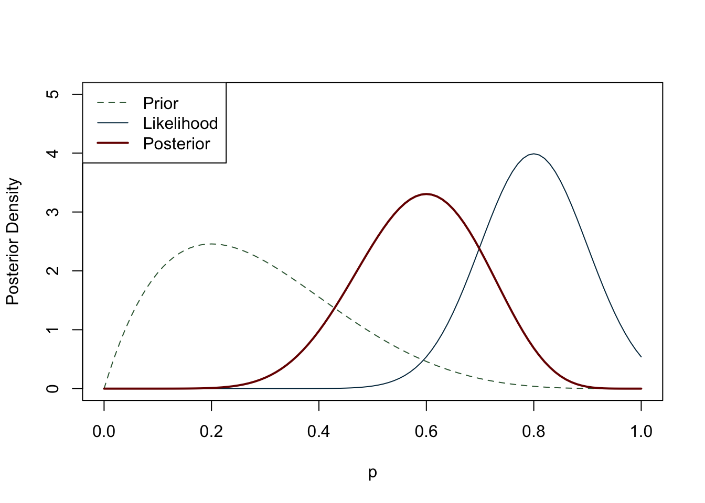
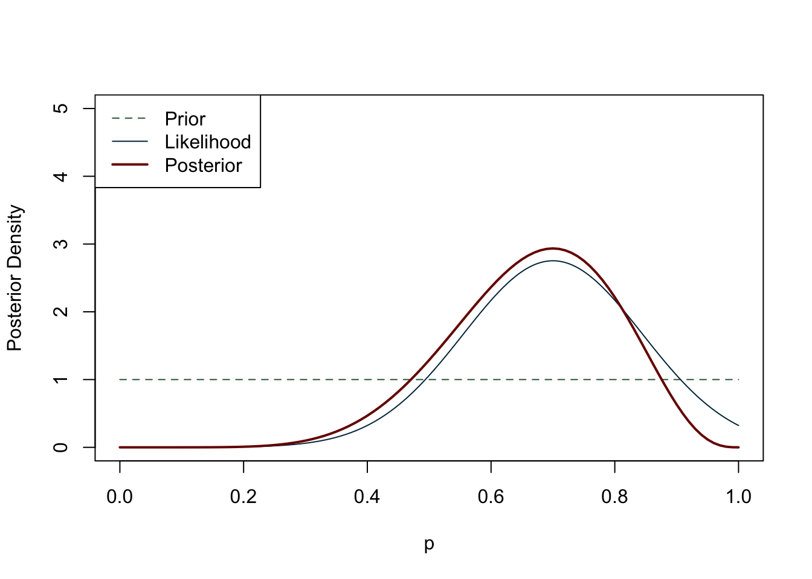
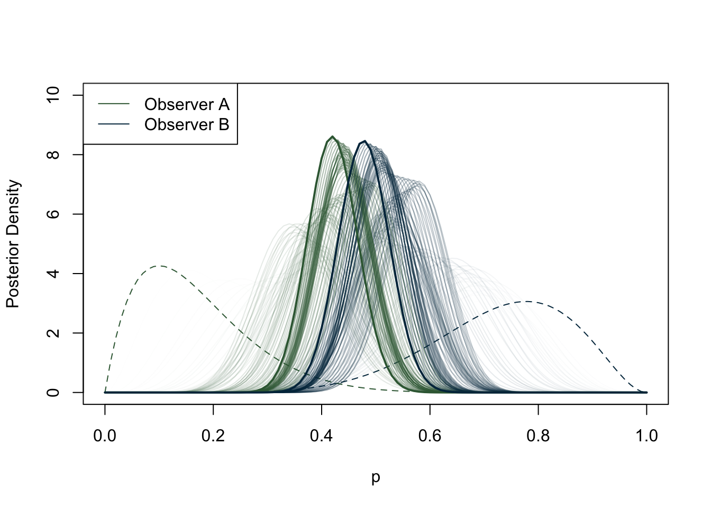
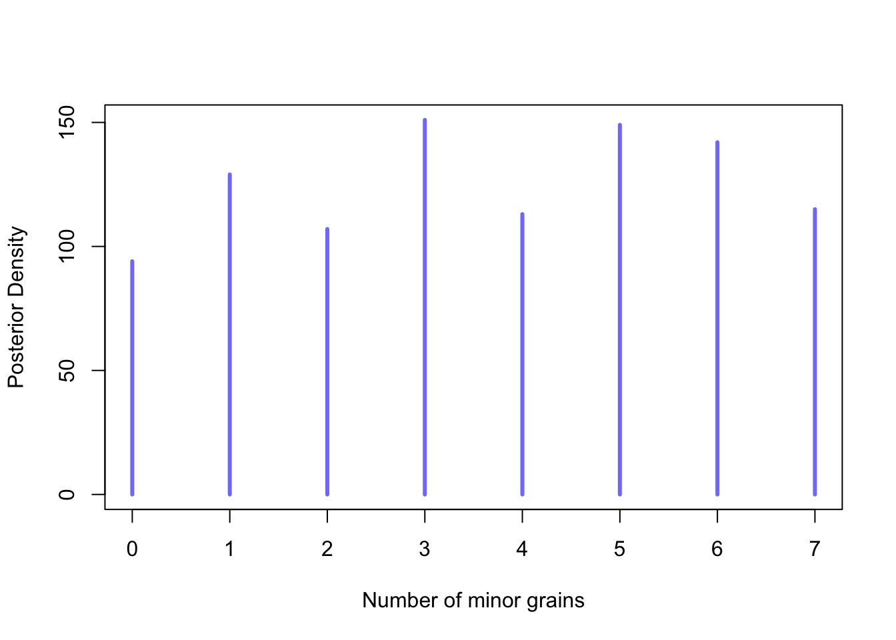
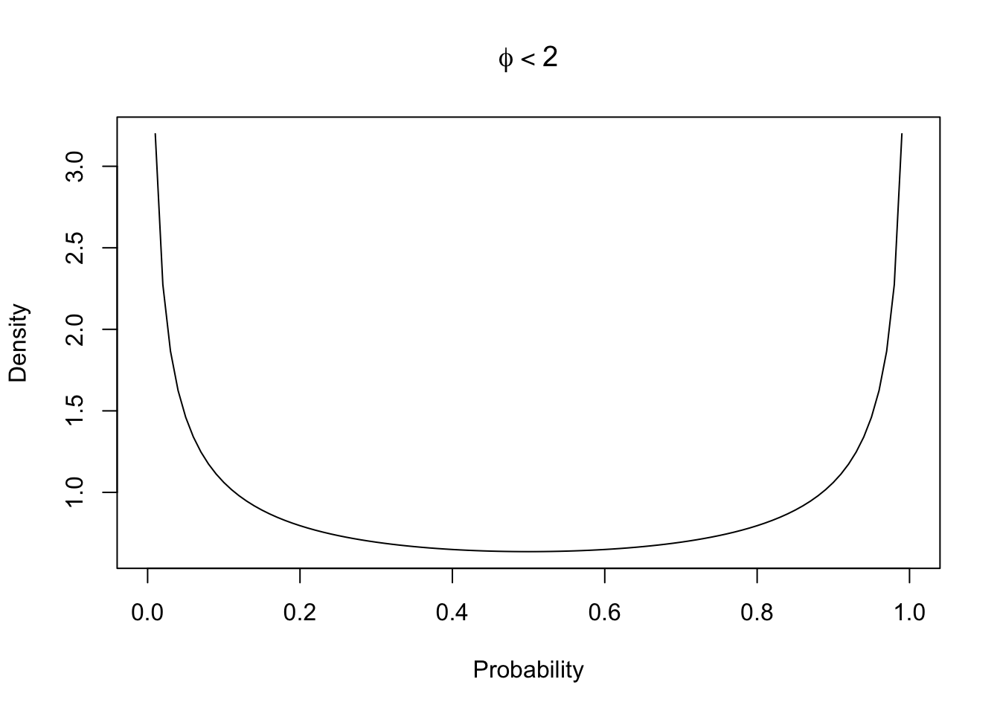
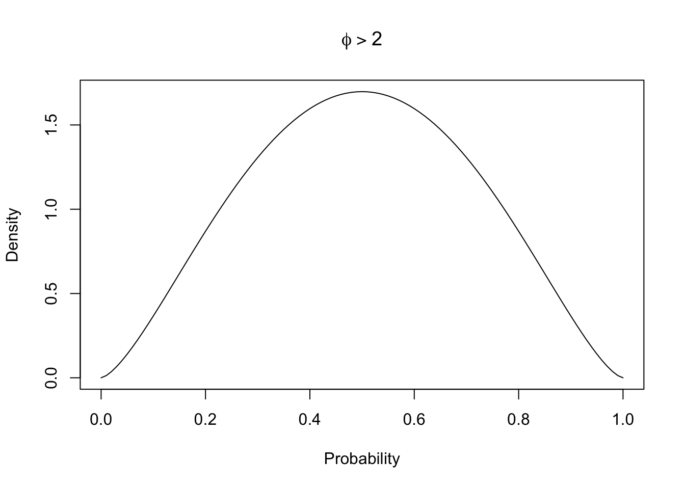

6 Methods
Page under construction
6.1 Introduction
This chapter presents the methodology used to carry out this study. The first section deals with the process of data collection, including defining the chronological and geographical boundaries of this research. This is followed by a brief introduction to statistical computing programming languages such as R. The third section outlines the approaches and issues of archaeobotanical quantification, describing ubiquity, richness and diversity indices and multivariate analysis used in a case study of the cereal dataset.
6.2 Data collection
This section focuses on the data collection phase, complementing the data entry process discussed in the database chapter (Chapter 5). The research uses legacy or published archaeobotanical and zooarchaeological data from a variety of sources such as monographs, book chapters, journal articles, conference papers, excavation reports, websites, and dissertations. The site bibliography provides a comprehensive list of these sources, while Figure 5.2 offers a graphical overview of the distribution of primary data sources. A few existing syntheses of archaeobotanical and zooarchaeological data (cf. Chapter 2) significantly contributed to the foundation of the database. The data was then organised and stored in a relational database, as detailed in the previous chapter. The publications selected met a number of criteria. Only trusted academic publications were considered, with a requirement for precise site location information or specific geographical context. Only sources that reported raw counts of plant and animal remains were selected. While data quality varied, efforts were made to include details from older excavation reports, albeit with some limitations. Comprehensive information, including sampling strategies, stratigraphic unit (SU) numbers, preservation methods, and sampled soil volume, were incorporated where available. To ensure robust statistical analysis and meaningful results, certain exclusions were necessary. Sporadic finds and low-quantity samples were omitted from particular analyses (e.g., PERMANOVA and nMDS) but retained in the database for comprehensive documentation. For plant and animal taxa, clear and unambiguous taxonomic indications were required for inclusion in the database. For example, plants belonging to the Triticum group that could not be further identified to species level were classified as ‘Unsp. Cereals’. Similarly, animal bones that were either unidentified or identified only by size (e.g. large ungulates) were stored as ‘unidentified’ to avoid potential confusion with other taxa.
The samples selected for this research come from sites that fall within the spatial and chronological boundaries of the study. Inclusion criteria encompassed sites within mainland Italy, dating from the 1st century BCE to the 11th century CE. In order to assess the geographical differences within the peninsula, and to simplify the statistics, the region under review was ideally divided into three parts: Northern, Central, and Southern Italy. Northern Italy lies between today’s northern limit and the latitude of about 43°N, the centre between about 42°N and 41°N, and the south from about 40°N to the southern limit of Calabria. To facilitate this division, the boundary of today’s regions was followed (Table 5.6). Although the region of Abruzzo is currently considered part of southern Italy for cultural reasons, it has been included in central Italy following a geographical logic. Although there are important micro-ecological differences, each of these three regions has coastal, plain, hilly and mountainous areas. The choice of boundaries was based on other geographical studies of ancient Italy (Palmisano et al., 2021; Parkinson et al., 2021).
Chapter 5, outlines site details, including location, geographical features, site type, and culture. Whenever it was not possible to assign a site to a specific culture (e.g. Byzantine, Lombard, etc.), this field was filled in generically with the corresponding chronology. For this project, decisions have been made on how to classify archaeological sites for the purposes of collecting statistical data and storing it in the database. While some sites are relatively easy to identify and categorise, there can be uncertainty, for example, in classifying sites as urban or rural, as these terms can have different meanings in the context of archaeology. The problem of correctly defining a settlement is not new to archaeological theory, and there have been several attempts to define the concept of ‘site’ itself (Bowes, 2020, p. 11; Davis, 2020; Dunnell, 1992; Parsons, 1972; Trigger, 1967). In order to ensure accurate categorisation, it was essential to consider the specific context and characteristics of each site, as well as the definitions and criteria used to classify them. This meticulous approach allowed for a robust selection of sites falling within the spatial and chronological boundaries of the study, thus ensuring the reliability and relevance of the data collected. For example, isolated and smaller settlements that did not have the typical characteristics of the Roman (Gros and Torelli, 2014) or medieval (Heers, 1995; Piccinato, 1993) city (public buildings, etc.) were recorded as “rural”. In the majority of cases, the site classification adhered to the original categorization provided by the respective authors.
Another criterion for selecting a sample was its chronology. Each sample (or collection of samples) had to be associated with a chronological range in centuries or years. Where reports gave only vague chronologies, such as ‘Roman’ or ‘early Medieval’, the report was discarded. This approach minimises the risk of misinterpretation when analysing the data. In many cases, publications report chronologies expressed in phases; if these phases were undated, the sample was not included in the database. The scale of detail for samples from the same site entered in the database is contextual and chronological. If the same context (e.g. ‘Room A’) provided several samples for the same chronological range, these were merged. This choice, although it may result in a loss of scale of detail, was necessary for reasons of time and resources. Most of the statistics performed on the dataset are based on a sample periodisation, from the Roman Age to the Medieval Age. The chronologies were defined as follows:
[R] Roman: from the 1st century BCE to the 2nd century CE.
[LR] Late Roman: from the 3rd to the 5th century CE.
[EMA] Early Middle Ages: from the 6th to the 10th century CE.
[Ma] Middle Ages: from the 11th century CE onwards.
In the database, the tables faunal_chronologies and plants_chronologies connect each bioarchaeological sample to another table with the identification numbers for the periods (e.g. Sample 1 = ID 1). If a sample has a chronology ranging between two periods, two separate entries will be recorded on the database (e.g. Sample 1 – 2nd to 3rd c. CE = Periods: Roman, Late Roman) with the result of the sample being repeated in both periods.

One of the methodological issues affecting this project is that of chronological fuzziness. Dating plant and animal remains using radiocarbon is very rare, at least in the samples recorded in the database. Most of these samples are dated using ceramics, and chronologies can range between one century or several. Rather than creating arbitrary weights that would affect the models in unexpected ways, all samples were considered to have the same weight and impact on the calculations. For example, if a sample spans three centuries, it is difficult to say whether the layer was formed in three centuries (e.g. a waste pit used over a long period), or whether the dating of that layer is less precise because a particular type of pottery was used over a long period.
6.3 Introduction to statistical computing
Section structure
Statistical approaches (statistical computing)
Software (R and packages)
What methods are applied to this thesis, why are there frequentist bits
Ecological analyses: ubiquity, richness, diversity
What is hypothesis testing? ANOVA and PERMANOVA
Say why I used PERMANOVA
What are the problems of HT? Get the reader ready for the Bayesian approach and try to find a way to justify the frequentist bits of this thesis.
Multivariate statistics
General introduction
Why they did not work in this thesis to explore the data?
Dimensionality reduction: nMDS - it is non parametric. Say why I used it.
Statistical computing, often referred to as computational statistics, is a branch of statistics that uses computational approaches to solving statistical problems. Traditionally, the term statistical computing places more emphasis on numerical methods, while computational statistics refer to topics such as resampling methods, exploratory data analysis, neural networks, etc. (Rizzo, 2019). Specifically, computational statistics deals with methods “unthinkable before the computer age” (Lauro, 1996). In archaeology, one widely used programming language for statistical computing is R, which has the advantage of relying on its strong academic community. The community actively contributes to the development of new packages, expanding the functionality and versatility of R for statistical computing. Researchers often choose R for statistical computing in archaeology due to its comprehensive statistical capabilities, flexibility, and the ability to reproduce and share analyses. The syntax and structure of R are specifically designed to facilitate data analysis and statistical modelling, allowing researchers to perform complex analyses efficiently. Additionally, R provides powerful data visualisation tools, enabling researchers to create visually appealing and informative graphs to communicate their findings.
6.3.1 Statistical programming: R
R, as described on the R-Project FAQs is a “system for statistical computation and graphics. It consists of a language plus a run-time environment with graphics, a debugger, access to certain system functions, and the ability to run programs stored in script files”. Increasingly popular for data scientists, R is based on S and provides its own IDE (the R GUI), although RStudio1 is the most popular IDE for computing the R language. For this project, RStudio was the standard IDE.
6.3.1.1 R Packages
In addition to base R, several packages enhance its performances and offer more tools to users. The packages are distributed by the official CRAN repository, which counts more than 19,877 packages2. This section details some of the packages that have been most useful for this research.
6.3.1.1.1 tidyverse
The tidyverse ecosystem (Wickham et al., 2019) is a core set of packages for R, maintained by Hadley Wickham for importing, tidying, transforming and visualising data which includes packages such as—ggplot2, dplyr, tidyr, stringr, tibble, forcats, purr, readr.
6.3.1.1.2 ggplot2
ggplot2 is the most common data visualisation package for R, included in the tidyverse environment. The package substitutes the R base graphics and allows visualisation of single and multiple components (Wickham, 2016).
6.3.1.1.3 knitr
The knitr engine enables the integration of R with HTML, Markdown and LaTeX. The package allows reproducible research (Xie, 2021) and was used for generating dynamic reports and documentation for this thesis.
6.3.1.1.4 vegan
The vegan package (Oksanen et al., 2022) is designed for ordination methods, diversity analysis and multivariate analysis in ecology.
6.3.1.1.5 rethinking
The rethinking package (McElreath, 2023) provides tools and resources for statistical modeling and data analysis in a Bayesian framework. Developed by Richard McElreath, it is specifically designed to support the concepts and techniques described in his book “Statistical Rethinking: A Bayesian Course with Examples in R and Stan” (McElreath, 2016).
6.4 Issues and approaches in the quantification of archaeobotanical data
To be written
Write that certain species have been identified as sp. or that others are merged (triticum a/d) because hard to tell apart
Write that I did not consider Triticum spelta, whenever present it was considered as a Cerealia
Write that zooarchaeological quantifications will be introduced in the section bayesian etc
- Justify this by saying that archaeobotanical analyses were harder data compared to zooarch data
Quantitative analysis of the archaeobotanical remains collected proved difficult due to several biases in the dataset which, if not controlled, could lead to erroneous results. In fact, the majority of published archaeobotanical material can be attributed to judgemental/feature-based sampling, which introduces biases as outlined in Chapter 3. Given the paucity of Italian archaeobotanical samples available for the period compared to other European countries (cite McKerracher?), and given that many samples contained outliers, it was not possible to adopt a purely quantitative strategy using the raw counts, but the data had to be processed in other ways. Before going any further, let us consider three sites to give a practical example of the outliers that were so common in the dataset: Parma (Piazza Garibaldi/via Cavestro), Miranduolo, Brescia (via Alberto Mario). The sample from the Parma excavation, Piazza Garibaldi/via Cavestro, comes from an urban cesspit and the seeds have been preserved by waterlogging (Bosi et al., 2012, 2011). In this sample, certain taxa skew the distribution and under-represent other plant remains. In the case of the mid 8th to mid 9th century samples from the rural village of Miranduolo, charred samples were taken from layers of a storehouse and storage pits. The outlier here is represented by Triticum aestivum/durum (4,037 seeds) and cereals in general, which have much higher counts compared to legumes or fruits (Buonincontri et al., 2014). In other cases, excavators may have taken samples from layers where a large conglomerate of seeds was visible to the naked eye. For example, in Brescia, via Alberto Mario, a small food store contained a large number of charred seeds of Panicum miliaceum (more than 21,000, after which the researchers stopped counting) and Triticum monococcum (750 seeds). Apart from these taxa, other plant remains were found in much smaller quantities (Castiglioni and Rottoli, 2019). It is clear here how the location of the samples affects the type of taxa we might expect to find: cereals are much more common than other taxa in food storage areas, whereas other seeds ingested by humans (figs, strawberries, grapes, etc.) might be expected to be found in cesspits (Smith, 2013). In addition to the biases that may be introduced by the choice of sampling strategies, as discussed in Chapter 3, other problems may arise, for example, from the way in which plant remains are preserved. Once again, Figure 3.2 and Figure 3.3 give a breakdown of the way in which seeds are preserved under different conditions.
In order to ignore these sources of bias, we would need a very large dataset so that outliers would have less effect on the calculations. Since this is not the case, we need to take precautions to avoid jumping to false conclusions. The first is to transform the data and the second, discussed later, is to use a statistical modelling approach. When it comes to numerical transformations for statistical analysis, there are several examples and approaches in the scientific literature (Bishop, 2006; James et al., 2021). Unfortunately, none of them are helpful for outliers of this nature; each site presents its own unique problems. Although Heinrich (2017) argues for the need for quantitative archaeobotanical analyses that go beyond presence/absence categories, with the current state of information available for the 1st millennium CE Italian peninsula, this is simply not yet possible. For this reason, most of the analyses of the palaeobotanical dataset presented in this study are based on the presence of particular species in each context (Bastow Wilson, 2012). Numerically, this means that raw counts are converted to 1 to indicate that a taxon is present, and to 0 to indicate that it is absent from a sample. Although much safer than other types of data transformation, this transformation has a strong effect on the data and inevitably changes the range of questions that can be asked of our dataset. Within each sample, the data is flattened and the importance of a taxon relative to other taxa in the same context is lost. Instead of asking questions such as “What was the most abundant plant in Roman rural sites?”, we can only ask “Which plant was most frequently found in Roman rural sites?”.
In one case, for demonstration purposes, the samples were transformed in a different way in order to preserve the quantitative information. In chapter Chapter 7 it is possible to see how different strategies affect the quantification of cereals at different stages. This short case study was chosen because cereals are present in most samples (unlike legumes, for example) and because the chronological division is the one that creates the least imbalance in the data. Other groupings, for example based on site type, would have distorted the results as smaller group sizes are unreliable, especially when frequentist approaches to statistics are used. The purpose of the transformations was to see how the proportions of cereals changed over time. In the first example (Table 7.10), simple means were calculated based on the total number of cereals. Whenever a cereal taxon was not present in a sample, its proportion was considered to be 0. In addition, the means are also affected by any other cereal outliers present in the samples. The second example (Table 7.11) shows instead the means calculated on the basis of true presences, excluding missing values (NAs). This type of calculation deals well with zero-inflated columns (i.e. cereal taxa that are rarely present in a sample), but runs the risk of over-representing rare species. Moreover, the results are still biased by the outliers present in the sample. The third example (Table 7.12) uses a different approach. This method involves converting the data into relative ranks using the decostand() function found in the vegan package (Oksanen et al., 2020). This transformation replaces the original count data with their corresponding increasing ranks, while leaving zeros unaffected. The result is that the taxon with the highest abundance is ranked as 1. This process has the effect of mitigating the effects of pronounced variations within the data, effectively smoothing out extreme values. Crucially, however, it preserves valuable information about the relative abundance of taxa. The values in these tables will be commented on later, but what is important to note here is how different strategies yield different figures, and how important it is to be careful when working with biased datasets. The optimal choice, although very limiting, is to work on presence/absence.
6.4.1 Ubiquity
Ubiquity, or presence analysis, is a popular approach in archaeobotanical quantitative analysis. The method is straightforward—the number of sites/contexts where a plant is present is divided by the total number of sites/contexts under examination. If, for instance, an olive pit is present in 3 sites out of 10, the ubiquity for the olive will be 30%. The formula for the calculation is at follows:
\[ U_x = (\frac{N_p}{N_{tot}}) \cdot 100 \] where \(N_p\) is the number of presences, and \(N_{tot}\) is the total number of contexts. The result can be multiplied by 100 to obtain a score in %.
This approach has both advantages and drawbacks. Presence analysis minimizes the impact of outliers (overrepresented plant species) on calculations (Wright, 2010, pp. 51–52), but the relative importance of a plant in a particular context is lost. It is also important to keep in mind that taxa richness is influenced by factors including sample size, deposition and preservation modes, and sampling strategies (e.g. sieving methodologies) (Banning et al., 2000; Pearsall, 2015, pp. 161–2). In general, larger sample sizes tend to produce more diverse samples, while smaller samples under-represent rarer species (Kadane, 1988; Plog and Hegmon, 1993). Despite these limits, ubiquity is the best option for immediate reading of the botanical dataset of the Italian peninsula. The variability of the seed/fruit samples is too high, with different species being outliers in different sites. As mentioned earlier, the probable reason for this is probably the poor quality of sampling, which usually occurs after an agglomerate of seeds is found during excavation. Typically, agglomerates are found in specific storage or processing areas (e.g. wine/olive processing quarters), skewing the distribution of the curve. Ubiquity overcomes this problem by providing a score based on the percentage presence of a plant species in the samples considered.
In addition to the general calculation of the diachronic ubiquity across the entire peninsula, it is also important to look for regional differences in the archaeobotanical dataset. To do so, I created an R function to subset data related to northern, central and southern Italian regions. For a clearer reading of the plot, I divided the plants into–Cereals, Pulses and Fruits/Nuts. The results are presented in Chapter 7.
6.4.2 Richness and diversity indices
Species richness (\(S\)) is the number of species found within a community or ecosystem. The boundaries of the region are defined by the researcher. While ecologists use sampling or censuses to obtain the richness value, archaeobotanists can only rely on sampling, counting the presence of species in the area under investigation (Moore, 2013). Species diversity is a measurement of species richness combined with species evenness, meaning that it takes into account not only how many species are present, but also how evenly distributed the numbers of each species are. There are several diversity indices used in ecology, all of which include abundance in the calculation. Given the biases in the dataset discussed earlier, it is safer to calculate diversity by grouping the samples only chronologically, so that the imbalance in the groups is not too high. Species diversity can be a useful indicator of the centralisation of agricultural practices towards specialised production or the specialised storage/import of specific products. Two diversity indices are commonly used in archaeobotany: the Shannon Equitability Index (\(E_{H}\)) and the Simpson Index (D). Both of these measures range from 0 to 1, where a value of 0 indicates an uneven assemblage or low diversity, while a value of 1 indicates maximum diversity. The Shannon Equitability Index (\(E_{H}\)) assesses evenness by considering both species diversity and their distribution. In simpler terms, a higher \(E_{H}\) score indicates a more balanced spread of individuals among species. Also referred to as the Pielou index, this measure is a variant of the Shannon index (Hill, 1973; Pielou, 1966). Its calculation follows the formula: \[E_{H} = \frac{ - \sum\limits_{i=1}^{S} p_{i} \cdot \ln p_{i}}{\ln S}\]
Here, \(\sum\limits_{i=1}^{S}\) indicates the sum across all species, with \(i\) ranging from 1 to \(S\), representing the total number of species. \(p_{i}\) stands for the proportion (relative abundance) of the \(i\)th species, and \(ln\) signifies the natural logarithm. The term \(S\) denotes the total number of species in the ecological community.
The Simpson index, on the other hand, is a different measure of species diversity that emphasises dominance within a community. It quantifies the probability that two randomly selected individuals belong to the same species. Higher values of the Simpson Index indicate lower diversity, with greater dominance of a few species (Simpson, 1949). The calculation of the Simpson Index is given by the formula: \[D = 1 - \sum\limits_{i=1}^{S} p_{i}^2\] The terms of this formula are equivalent to the previous ones, with \(\sum\limits_{i=1}^{S}\) representing the sum across all species, with \(i\) ranging from 1 to \(S\). Again, \(p_{i}\) represents the proportion of the \(i\)th species. This formula subtracts a calculated integer sum from 1, so that \(D\) ranges from 0 to 1, where a value of 0 indicates maximum diversity (each species is equally abundant), and a value of 1 indicates minimum diversity (one species dominates the community).
Examining both measures together provides a more holistic view of the ecological characteristics of a community. The Shannon Equitability Index emphasises evenness, showing the balance of species distribution, while the Simpson Index highlights dominance and the prevalence of abundant species. The two indices presented above are not the only diversity and equitability indices available in scientific literature. Ecological diversity indices have indeed undergone several stages of critiques, with those advocating for better and more mathematically sound indices and those advocating that ecologists should stop using such indices and move on to other methods, such as multivariate analysis (Barrantes and Sandoval, 2009; Daly et al., 2018; Heip and Engels, 1974; Morris et al., 2014). In summary, although diversity indices can help to read the distribution of species within archaeobotanical samples, caution is required in their interpretation.
In this study, both diversity indices were applied to each sample in the dataset to produce a score. The diversity scores for each site were later modelled using a Bayesian approach, which is explained in more detail in the following sections of this chapter. The mathematical breakdown of the models specific to plant richness and diversity is presented in Section 7.2.
6.4.3 Multivariate analysis
This research uses multivariate analysis to explore possible relationships within the archaeobotanical dataset under investigation. Univariate analyses can be easily plotted and visualised using bar charts, histograms and density curves. A scatterplot (or scattergram) shows the relationship between two variables by plotting their values on the axes of a graph using Cartesian coordinates. This relationship can also be measured mathematically by calculating a distance between two points on the graph. However, the relationship between more than two variables is much harder to read on a scatterplot, as it would require as many axes as there are variables. If our analysis is exploratory, we may not yet know where to look for correlations. One possible solution is to analyse every combination of two variables in the data set and measure their correlation. This would take too much computing time if the dataset had a large number of variables, i.e. if we were dealing with big data. In addition, we would only be gathering information about the relationship between two variables when there may be another factor influencing a trend or phenomenon. Multivariate statistics has a wide range of applications, including grouping and multidimensional scaling, as well as in machine learning and predictive analysis (Fletcher and Lock, 2005). In this research, multivariate methods have been applied to the botanical dataset, mainly with the aim of (i) testing hypotheses between multiple variables, and (ii) reducing the dimensionality of the data, to assess which variables are the main drivers of change in the datasets, and to examine relationships between these variables. In particular, these methods have been used to test the hypothesis that different cereal farming strategies were adopted between southern and northern Italy in the early Middle Ages.
6.4.3.1 Hypothesis testing: PERMANOVA
The importance of statistical significance testing in archaeological applications was discussed in Chapter 2. In this context, concepts such as null hypothesis formulation and p-values were introduced. Within the framework of null hypothesis significance testing (NHST), parametric and non-parametric statistics are two different approaches used to analyse data and make inferences about population parameters. These approaches have different assumptions and are suitable for different types of data and situations. While parametric statistics are more powerful, they assume that data follow certain distributions (i.e. the normal distribution) and are based on parameters such as means and variances. Non-parametric statistics are less strict because they make no assumptions about the underlying distribution of the data. Rather than being based on numerical values, most of these methods are based on the rank or order of the data. Non-parametric statistics are more robust and appropriate in the case of ordinal, nominal, skewed data where the normality condition is not met (Anderson, 1961; Hollander et al., 2015; Kraska-Miller, 2014; Wasserman, 2006; Wu et al., 2017). As the cereal data set, transformed into presence/absence values, does not follow a normal distribution, non-parametric statistics are the more appropriate choice for hypothesis testing. In archaeology, significance tests are commonly used on the means of a group of samples to assess whether the samples come from the same distribution. In this specific case we will use a non-parametric test, permutational analysis of variance (PERMANOVA).
Permutational multivariate analysis of variance (PERMANOVA) is a versatile multivariate statistical test based on permutations. As a semiparametric test, it makes no assumptions regarding homogeneity of variances or normality of data distributions. The test was developed by Marti J. Anderson (2017) as a flexible method for comparing groups of objects in a multivariate context. The primary focus of PERMANOVA is to determine whether there are statistically significant differences in centroids (location) and dispersion (spread) between the different groups being compared. This is achieved by examining measure space, a mathematical representation of the relationships between objects in the dataset. The test operates under a null hypothesis that there are no meaningful differences in centroids and dispersion between the groups. A permutation-based procedure rearranges the observed data in a variety of ways, generating a distribution of possible outcomes under the assumption that the null hypothesis is true (Golland et al., 2005). By comparing the observed test statistic with this permutation-derived distribution, PERMANOVA determines whether the observed differences in centroids and dispersion are statistically significant or could have occurred by chance. Before performing the analysis, it is necessary to calculate the distances between all pairs of objects within the dataset. These distances serve as a basis for assessing the dissimilarities between the objects and can be based on various metrics such as Euclidean distance, Jaccard dissimilarity, Manhattan distance, Bray-Curtis dissimilarity or other measures depending on the data (Anderson, 2001; Bakker, 2023). As the archaeobotanical dataset is examined using a presence/absence approach rather than raw counts, the most appropriate dissimilarity index is Jaccard. This index calculates the dissimilarity between sets of archaeobotanical samples and assigns a score to each pair of samples so that, given \(J(Sample_A, Sample_B)\), a value of 0 means that two samples have identical species compositions (all species present or all species absent), while a value of 1 means that the two samples have no species in common.
6.4.3.2 Dimensionality reduction and ordination
Dimensionality reduction techniques transform high-dimension datasets into a low-dimension ordination space, with the intention of maintaining the geometry and data structure as close as possible to the original dataset. The dimension of a dataset is given by the number of variables (i.e. the columns in the table). As anticipated in Section 6.4.3, as each variable is graphically represented by an axis, it would be virtually impossible to represent more than three axes in a graph. Ordination allows to reduce data dimensionality to usually one to three (at most) dimensions. Moreover, focusing on a reduced number of dimensions reduces the amount of “noise” that can mislead the interpretation (Gauch, 1982). The points generated through ordination techniques (the objects in our dataset) can eventually be plotted in a scatterplot. In most of the ordination methods, points plotting closer together in graph are more similar, whereas points far apart from each other are more dissimilar (Shennan, 1997, p. 197). For instance, one could perform an ordination on a group of burials in a cemetery where each point represents a single burial assemblage. After the ordination it is also possible to group the new reduced set of variables, to observe differences between groups and facilitate the interpretation. In the previous example, a group might be represented by burials of the same ethnic group, status, etc.
Many of the ordination techniques described in this chapter developed in fields outside archaeology, and are thus borrowed from disciplines as community ecology. Ecologists regularly apply ordination methods for the study of environmental gradients, so that the term “gradient analysis” is often used interchangeably with “ordination”. An environmental gradient refers to variations in site characteristics (e.g. time, elevation, temperature, vegetation, etc.), which in turn can affect biotic factors (e.g. species abundance, diversity, etc.) (Grebner et al., 2013). The purpose of ordination is then to identify the cause of ecological processes in the dataset. Generally, it is possible to apply ordination on datasets in which the variables have a cause-and-effect (e.g. climate vs. plant species) or mutual influences on each other. There are two main types of ordination, or gradient analysis, techniques (see Table 6.1): direct (constrained) or indirect (unconstrained). The objective of indirect (unconstrained) gradient analysis is to identify patterns between samples of ‘dependent variables’ (e.g. which sites are more similar according to their species composition). Conversely, direct gradient (or constrained) analysis includes more information (or tables) in a single analysis—the dependent variables are now constrained to be a function of other sets of ‘independent variables’ (usually environmental proxies). In short, a constrained analysis uses both datasets to find the best possible mathematical relationship between the dependent and independent variables. In this sense, direct gradient analysis can be considered as an extension of unconstrained analysis (Syms, 2008). The choice between using constrained or unconstrained methods for ordination strictly depends on the research questions and on the researcher’s dataset.
| Response model | Indirect gradient analysis | Direct gradient analysis |
|---|---|---|
| Linear | Principal component analysis (PCA) | Redundancy analysis (RDA) |
| Unimodal | Correspondence analysis (CA) Detrended CA (DCA) |
Canonical correspondence analysis (CCA) Detrended CCA |
| Monotonic | non-metric multidimensional scaling (nMDS) |
6.4.3.2.1 nMDS
Multidimensional scaling (MDS) is a technique to visualise the level of similarity of individual observations (e.g. sites/cases) in a dataset. MDS works with matrices containing Euclidean distances between each pair of observations. Conversely, non-metric multidimensional scaling (nMDS) is a rank-based approach that finds both:
A non-parametric monotonic relationship between the items in the dissimilarity matrix and the Euclidean distances.
The location of items in the low-dimensional space.
The goal of nMDS is to represent the pairwise dissimilarity between items in the matrix as closely as possible. For this reason, it is considered as a good technique for multivariate data visualisation. nMDS can be used on quantitative, qualitative and mixed data. The R function metaMDS from the package vegan allows users to select the distance metric most appropriate to their data (e.g. Bray-Curtis, Jaccard, etc.). As nMDS is an iterative approach, meaning that the the computations are run until the best solution is found, it can be quite computationally demanding for larger datasets. Although the nMDS algorithm tries to minimize the ordination stress, it is a good practice to compute the ordination stress value to judge the reliability of the solution found (goodness-of-fit). Ordination stress indicates how much distorted are the fitted data when compared to the original observed samples. Stress values can also be visualised with the function stressplot() (vegan package), which produces a Shepard stressplot (Figure 6.2).

The Shepard plot displays the ordination distance against the observed distance. Ideally, the higher the points should fall on a monotonic line, where an increased observed distance is related to an increased ordination distance. Moreover, the higher the number of dimensions, the lower the stress value. If interested in choosing the appropriate number of dimensions, it is possible to use a scree plot which shows the number of dimensions against the stress level. Generally, it is possible to interpret stress values following these guidelines (Dexter et al., 2018):
| Interpretation | Stress level |
|---|---|
| Excellent | < 0.05 |
| Good | < 0.1 |
| Usable (but caution is required) | > 0.2 |
| Random | > 0.3 |
If the solution has produced a good stress level for the number of dimensions required, it is possible to plot the nMDS and interpret the results. Points that plot closer together are more similar, while points that are distant one to each other are more different. The nMDS plot can also be useful in recognizing groups (points grouping together and plotting further from other points). An example is provided in Figure 6.3.

6.4.4 Case study: Cereal richness across the Italian subregions
Both qualitative and quantitative methods were used to reconstruct the regional differences in cereal farming practices in Italy during the first millennium. In addition to the Bayesian approach, which is described later in this chapter and which is the core of this research, a frequentist approach was also used as a case study to test the validity of the conclusions drawn from the Bayesian models. Before carrying out these statistical analyses, it was necessary to carry out some pre-processing of the data. This involved:
Selecting all the cereals columns from the
plant_remainstable, keeping theMacroregioncolumn as a categorical variable.Removing rows with no cereals (samples reporting only fruits, nuts and legumes but no cereals).
Selecting samples where the total of seeds was greater than 10. The total includes fruits, nuts and legumes in such a way that samples poor in grains but rich in other seeds were not of minor importance in the calculations, and were in essence considered reliable. This process resulted in a more limited number of samples available for analysis. The sample sizes after pre-processing can be viewed in Section 7.4.1.3. Although the lower limit of the allowable sample size may appear small (which may affect species richness), some sites reported low numbers of seeds.
Transforming the raw counts into presence/absence, using the function
decostand()(method=pa) in theRpackagevegan(Oksanen et al., 2020).
Multivariate statistics are used in this research to test the hypothesis of a shift in Italian cereal farming practices and to visualise the separation between macroregions. Due to the small size of the data sets, the statistical methods used in this research are non-parametric or distribution-free, as the data do not follow a normal distribution. As non-parametric statistics make no assumptions about the distribution of the data, they are less powerful than parametric methods, but are flexible and particularly useful when dealing with small datasets (Kraska-Miller, 2014). Two main methods were used: PERMANOVA and nMDS, as described above. After preprocessing, PERMANOVA could be run using the adonis2() function in the vegan package. This function computes a distance matrix using the Jaccard distance and performs an analysis of variance on the matrix. The Jaccard distance is often used in presence/absence analyses because it is not based on Euclidean distances (Kosub, 2019). If the PERMANOVA reports a significant p-value for the selected response variable (in this case Macroregion), it is important to check that the assumptions of the test are met. One of these assumptions is that the variances are homogeneous. To this end, the betadisper() function (also in the vegan package) checks the homogeneity of the variances by calculating the multivariate analogue of Levene’s test for homogeneity of variances, which measures the distances of the group samples from the centroids. The most common test for whether the distances from the centroids are significantly different is to perform an ANOVA on the betadisper() object. If the ANOVA returns a p-value that is not significant (i.e. the p-value is greater than 0.05), it means that the variances of the distances from the centroids are similar between the groups and the assumption of homogeneity of variances is met for the PERMANOVA analysis.
PERMANOVA was used to test the hypothesis of a separation between northern and southern Italy in two chronological phases. However, this test does not indicate the extent of this separation. For this purpose, nMDS, a non-parametric technique for reducing the dimensionality of a dataset, is useful. Although it is commonly applied by reducing a dataset to two dimensions, following a procedure similar to Cardarelli (2022), the dataset will be reduced to one dimension so that the distance between two density curves can be calculated. nMDS can be computed using the metaMDS() function in vegan, which allows for several dissimilarity measures. The most appropriate measure for this dataset is again the Jaccard distance. In addition to reducing the dimensionality of the dataset, the aim was also to measure the degree of separation between regions using the Wasserstein distance, also known as the Earth Mover’s distance. This measure quantifies the distance between two probability distributions, taking into account the cost of moving mass from one distribution to the other. In order to avoid potentially biased estimates in the calculations, the macroregion of Central Italy and the phases LR (Late Roman) and Ma (11th century onwards) were excluded from the scaling due to the very uneven sample sizes. These phases are analysed separately using ubiquity only. The nMDS was run with the reduction set to one dimension only, and KDE plots were used to visualise the results. Reducing the dimension to one allows for easier distance calculations using the Wasserstein distance. Finally, the distance was calculated using the wasserstein1d() function in the transport library (Schuhmacher et al., 2022).
6.5 Issues and approaches in the quantification of zooarchaeological data
Discuss diversity and richness? https://doi.org/10.1016/0305-4403(88)90006-4
When compared to the archaeobotanical dataset, the collection of zooarchaeological samples allowed for a genuinely quantitative approach, albeit with some challenges. Similar to archaeobotany, most excavations lacked a sampling strategy and instead used feature-based sampling. However, biases are less prevalent in the zooarchaeological dataset. In fact, the bones of primary domesticates such as sheep, goats, cattle and pigs are readily identifiable during excavation, leading to less bias in their representation in the dataset. Nevertheless, small bones, notably those of fish and birds, pose a challenge as they are often underrepresented owing to difficulties in visual identification. Additionally, not all excavations utilized or declared the use of flotation, making it difficult to compare the abundance of these species. The zooarchaeological dataset presents a limited number of outliers. Although a few cases may be cited, these outliers do not have a significant impact on the analysis. This is partly attributable to the dataset’s much larger size compared to the archaeobotanical dataset. Additionally, the inclusion of these outliers may indicate real conditions at the archaeological sites, providing additional reinforcement. For example, let us examine the case of the faunal remains uncovered in Calvatone-Bedriacum from the 4th-5th century CE. The remains demonstrate a significant imbalance between the species present. While the total NISP count for pigs and caprinae amounts to 63, the amount of identified cattle specimens is 919 (Wilkens, 1990). The over-representation of cattle remains in this instance is most likely a result of economic specialisation, possibly due to the slaughter of animals in close proximity to the site.
Given that the dataset is generally less biased than the archaeobotanical one and contains fewer outliers, opting to work with counts rather than performing a presence/absence analysis for animals was possible. This choice was also driven by the fact that the major domesticates were consistently present at each site, making presence/absence analysis less informative. Such an analysis might be preferable for examining rare species, assuming that comparable samples are used and the process of flotation is consistently applied throughout each excavation. In this regard, the dataset concerning fauna provides more informative data. Unlike archaeobotany, it is feasible to inquire about topics like “Which variety of animal was most abundant on a Roman farm?” or “Is it more likely to find sheep and goats on a medieval mountain site?”
Despite the greater quantity of samples and reduced amount of outliers, the zooarchaeological dataset also presented some problems for quantitative analysis. Because NISP counts must be comparable, it is possible to convert the count data for each sample into proportions between 0 and 1. Nonetheless, when dividing the proportions into groups (e.g. by chronology, site type), it becomes clear that each animal’s distribution across sites is overly dispersed, with the curves for each animal being right-tailed (positively skewed). Simply put, the distribution is asymmetric and does not adhere to a normal curve, rendering the interpretation of common measures of central tendency (i.e. mean, median, mode) problematic. Although these measures provide informative insights for normally distributed data, they may mislead the interpretation of right-tailed distributions. In such situations, the mean usually tends to be skewed towards the long tail, resulting in an inaccurate representation of the typical proportion. Similarly, the median may not precisely express the middle value, particularly in circumstances where extreme values dominate the right tail of the distribution. These concerns are addressed through the use of Bayesian statistical modelling, which is introduced later in this chapter.
6.6 Building a statistical model
Whenever dealing with non-normal or skewed distributions, it may be wise to move away from measures of central tendency and model data instead. Creating a statistical model to trace past human activities is a challenging undertaking. Choosing the most suitable predictor (or set of predictors) and response variable to answer our question requires careful consideration of several factors. In archaeology, there is an additional complication because we often cannot select our data and have to work with what is available. The majority of our data is a proxy, or representation, of what we are genuinely interested in. For example, the number of identified specimens of pigs at a particular site is a proxy for how many pigs would actually have been at the site at a particular time. Building statistical models additionally requires taking into account causal inference, particularly when attempting to establish causal relationships between variables. In this study, the use of causal diagrams, also known as directed acyclic graphs (DAGs), is used to represent statistical models, showing how “when we draw an arrow from \(X\) to \(Y\), we are implicitly saying some probability rule or function specifies how \(Y\) would change if \(X\) were to change” (Pearl and Mackenzie, 2019, p. 45). Understanding the causal pathways and potential confounding factors3 is crucial for precise model formulation and result interpretation. Whenever we have additional predictors available, it is not always advisable to include them all in our mathematical model. Including many variables in a regression may yield “significant” results, but the scientific justification for the incorporation of certain variables may instead be flawed. Furthermore, caution must be exercised as the production of archaeological data involves various intricate processes and is frequently impacted by numerous biases, some of which have already been addressed in this research. Thus, statistical modelling is not only a computational activity but also a meticulous process that amalgamates data, theory, and domain knowledge to yield meaningful insights into intricate phenomena.
Levins (1966) proposed that a model has three interdependent properties: generality, precision, and reality. Generality denotes the capability of a model to describe a broad range of phenomena. Precision relates to the model’s accuracy in predicting the behaviour of a specific system. Realism, however, concerns the extent to which a model mirrors the actual processes at work in the system being investigated. However, there is a trade-off, as the author suggests that only two of these properties can be improved simultaneously. Figure 6.4 illustrates how various combinations of these properties produce empirical (precision and reality), analytical (generality and precision), and mechanistic (reality and generality) models. Nevertheless, Guisan and Zimmermann (2000) noted that the distinctions between the three model types are frequently not as sharp and that it is possible to achieve a combination of the desired properties with some compromise.

Among the statistical models most frequently used are Generalised Linear Models (GLMs). GLMs should be employed because of their ability to handle a wide range of response variables, including non-normal and categorical variables, and to allow modelling of other distributions. Furthermore, GLMs permit the modelling of non-constant variance functions, particularly valuable in addressing heteroscedasticity, a common issue in many datasets. Once the predictor (\(X\), the factor used to make the prediction) and the response variable (\(Y\), the factor being explained or predicted) and are identified, the subsequent step is to analyse the relationship between the two by correctly formulating the statistical model. The statistical method used for modelling data must be appropriate to the type of data being analysed. When modelling counts of data, a probability density function (PDF) such as Poisson, negative-binomial, and others should be specified. For presence-absence data, various PDFs such as binomial, beta-binomial, and others are necessary (Guisan et al., 2017, pp. 55–56; Guisan and Zimmermann, 2000, pp. 159–160). Each of these distributions possesses distinctive properties and traits that are suitable for modelling certain kinds of data. For example, the Poisson distribution is commonly employed when operating with count data, such as the amount of events of a particular kind taking place within a fixed interval. It presupposes that events happen at a consistent rate and are mutually independent. On the other hand, the binomial distribution is appropriate for modelling binary data, in which outcomes are either success or failure, such as presence or absence. Along with selecting the appropriate probability distribution, choosing a link function is also crucial in statistical modelling. The link function determines the relationship between the predictors and the expected value of the response variable. Commonly used link functions include the logit link for logistic regression (which constrains the outcome variable between 0 and 1), the log link for several types of regression (Gaussian, Poisson, Gamma, etc.), and the identity link for linear regression. Selecting a suitable link function depends on the data type and the specific research question being addressed.
6.7 Modeling, the Bayesian way
“Bayesian data analysis takes a question in the form of a model and uses logic to produce an answer in the form of probability distributions” (McElreath, 2016). In the literature review section we already discussed the rationale behind Bayesian inference, introducing the concept of prior probabilities. The construction of a Bayesian statistical model initially resembles that of its frequentist counterpart, as we begin with a sampling model for observed data (\(B\)) given a vector of unknown parameters (\(A\)). However, a unique aspect of the Bayesian model is that the unknown parameters are not fixed, but instead are regarded as random. We create a probability distribution for A that summarises any relevant information. This distribution is known as the prior distribution. Prior distributions may have other random parameters which can be assigned other probability distributions, and these parameters are referred to as hyperparameters. Bayes’ Theorem is then used to derive the posterior distribution, which can be viewed as a compromise between our prior knowledge and the data we have gathered (Figure 6.5). In short, if we have prior knowledge or belief about an event, we can use Bayes’ rule to update our belief in light of new data:
\[ P(A|B) = \frac{P(B|A) \cdot P(A)}{P(B)} \]
The probability \(P (A|B)\) of a hypothesis \(A\) being true, given the observed evidence \(B\), is proportional to the likelihood of the evidence given the hypothesis \(P (B|A)\), multiplied by the prior probability of the hypothesis \(P (A)\). This is divided by the probability of the evidence \(P (B)\) itself, which normalizes the result so that the probabilities sum to one. The resulting probability distribution is called the posterior probability distribution, which quantifies our updated belief in the hypothesis given the observed evidence. More than one hypothesis is plausible, and Bayesian probability theory allows to quantify uncertainty and compare different hypotheses (rather than comparing our hypothesis against a null hypothesis) based on their posterior probability distributions (Gelman et al., 2013, pp. 6–8).
However, there is a catch, especially for complex models: the posterior distribution cannot be expressed in closed form and can only be explored by working with samples. These samples in turn can help us to estimate properties of the posterior (e.g. mean, variance, etc.). The challenge is that drawing samples directly from the posterior can be computationally infeasible, especially when dealing with high-dimensional parameter spaces or complex models. The mathematics behind this process is prohibitively difficult (if not sometimes impossible), which is one of the reasons why Bayesian statistics has only taken off in recent years, with increasingly powerful computers. Bayesians have devised several ways of sampling from a posterior distribution, although the method most commonly used in recent years is Markov chain Monte Carlo (MCMC). While it is not possible to give a detailed mathematical explanation of the method here, the logic behind it is relatively straightforward. Imagine walking into a room blindfolded and trying to avoid tripping over furniture. Most people would take small steps in each direction, but if they accidentally tripped over something, they would remember the location of the obstacle. By repeating this process many times, you eventually learn the layout of the room. In a Markov chain, you can take a very large number of steps from a given location, with the next step depending only on where you are. The chain will then be the path you have taken. The ‘Monte Carlo’ part of MCMC refers to the randomness of your path. MCMC allows you to get a general idea of the shape of a distribution, in this case the posterior distribution, to explore its properties (Albert, 2009; Carlin and Louis, 2008, pp. 120–140; Hartig et al., 2011; Marin and Robert, 2014; Robert and Casella, 2010, 2004; Tierney, 1994).
Now that we have covered the basics of Bayesian inference, let us take a closer look at building a model. As we have seen, once we have collected data and built a DAG, it is necessary to think about any prior beliefs we may have about the phenomenon we are trying to predict. Particularly in archaeology, we may not have a history of previous surveys or strong beliefs about our data. If we cannot feel confident about our prior knowledge, does this mean that we cannot do Bayesian inference? Or should we switch to frequentist statistics if we do not fully accept the subjectivity of the Bayesian approach, but still value its logic? It turns out that certain priors have a weaker influence on the posterior distribution than others. These priors are referred to in various ways: flat, weakly informative, uninformative, diffuse, among others. For the purposes of this study, we label them as ‘weakly informative priors’ as virtually any prior has some impact, albeit minimal, on the posterior distribution. A weakly informative prior does not favour any particular interval of a distribution, and the observed data have a much greater weight on the posterior distribution than the prior. A canonical example of a weakly informative prior in the context of a binomial distribution (constrained between 0 and 1) is the uniform distribution (Figure 6.6). If there is no prior belief regarding the likelihood of an event occurring, using the uniform distribution implicitly says that we believe that the mean occurrence could be anywhere between 0 and 1. It is worth noting that even stronger priors have a minimal effect on the posterior distribution when the sample size is large enough (see Figure 6.7) (Albert and Hu, 2020, p. 344; Banner et al., 2020; Johnson et al., 2022, p. 234; McElreath, 2016, p. 127).


This study has exclusively sought to use weakly informative priors in its models for several reasons. Firstly, the sample size of some of the sample groups under examination (e.g., archaeobotanical remains from Roman Central Italy) is insufficient for informative priors to be used. When observations are scarce, informative priors pose the risk of outweighing the posterior. On the contrary, a prior that is weakly informative will result in a posterior distribution that more closely resembles the actual data, even with only one observation. Secondly, as the study aims to encompass sites from diverse contexts, which may include varying site types and geographical features, and in light of the dearth of previous statistical studies on the subject, excluding localised studies discussed in the literature review, the adoption of weakly informative priors is deemed more suitable. It is worth noting that although the terms are often used interchangeably, there is a distinction between flat priors (i.e. the uniform distribution) and weakly informative priors (McElreath, 2016, p. 36). The priors used in the models in this research have been carefully constructed so that they do not contain any bias towards any particular interval in the distribution of the data, but at the same time are sceptical of extreme values. We will explore the practical implications of these types of priors when constructing a Bayesian model. For now, let us examine an example. Let us suppose we are developing a model that anticipates the occurrence of cattle in Roman Italy. Cattle were a frequently occurring farm animal during the Roman era, serving as both a source of food and as labour. This information is derived from various literary sources and spans a wide timeframe. Most zooarchaeological studies also confirm widespread presence of this animal in Italy. Although it is possible to find extreme cases, it may be more plausible to assume that, in an archaeological dig, a portion of identified specimens will include cattle, rather than no cattle or only cattle.
For this study, we opted for a Bayesian approach as it provides us with a good degree of flexibility and the ease of interpretation. In the Bayesian set of tools there is another valuable resource that goes by multiple names in scholarly literature, namely multilevel models, hierarchical, mixed-effects models, and random-effect models (Albert and Hu, 2020, p. 438; Johnson et al., 2022, p. 375; Kruschke, 2015, p. 557). Among these definitions, Richard McElreath’s term of “models with memory” is particularly compelling (McElreath, 2016, pp. 399–400). However, for clarity purposes we will refer to these as “multilevel models” to avoid any confusion. Before jumping into the multilevel territory, it is necessary to introduce the concept of “pooling” data (Johnson et al., 2022, pp. 377–375). The term simply refers to the grouping of data from various observations, datasets, experiments, and the like. However, the manner in which we pool data can significantly impact the range of questions we can pose to our dataset, and ultimately influence the interpretation of results. Consider a data set of \(N\) independent samples containing NISP data from pigs that were found in a particular area and that date back to a particular period of time in centuries. If we disregard any attributes that these samples may carry (such as their origin from a rural or urban context, chronology, location, etc.) and pool all the observations together, we are using a “complete pooling” technique. Any outcome of our modelling will depend on the entire dataset, which restricts the range of questions that can be asked but may also lead to misinterpretation. If we study the correlation between a certain altitude and a particular animal and attempt to anticipate the presence of this type of animal at a particular elevation, our inference may be distorted if this correlation varies amongst different time periods. On the other hand, the use of a “no pooling” technique considers each group as independent. This is especially informative for evaluating variability within a group. For example, it allows us to determine how much elevation affects the presence of the animal being examined during specific time periods. However, not pooling the data has a downside: it prevents generalisation. This limitation is particularly significant when dealing with smaller groups, as the utilised method presupposes non-sharing of critical information amongst groups. “Partial pooling” may be the solution to these problems. Bayesian multilevel models possess “memory” as they exchange information among groups. By comprehensively studying each data cluster, the estimates for every cluster are in turn refined and improved. According to McElreath (2016, p. 400), multilevel modelling has four primary advantages:
- The availability of new samples improves the estimates.
- Estimates are improved whenever the group sizes are imbalanced. This prevents groups with more samples available to dominate over smaller groups.
- Variation is explicitly modelled. Multilevel models provide both within-group and between-group variability. Within-group variability tells us how consistent the observations are within a single group. On the other hand, between-group variability provides information on how much observations differ from group to group.
- It does not require data transformation (i.e. averaging) and preserves the uncertainty in the dataset.
The rationale for partial pooling and sharing information between groups is straightforward. Our knowledge about a group is not null even when it only comprises a few samples. Imagine entering an unfamiliar café and ordering a coffee. Although the price is unknown, we make an assumption based on previous coffee shop experiences, the cost of living in the city, the appearance of the café, etc. Similarly, it is logical for the model to anticipate specific estimations on the basis of all other groups. However, this does not imply that the model is generating estimates with a high degree of confidence: if the prior we have previously set is weak enough, with a small set of data the expected values will fall within a sufficiently large range, also intuitively known as the “credible interval”.
6.7.1 Building Bayesian models
With an understanding of the core principles of Bayesian modelling, let us now explore the process of model building in greater detail while focusing on the dataset employed in this research. Different models have been utilised to analyse archaeobotanical and zooarchaeological data, due to the constraints of the former. After detailing the approaches and distributions utilised in each dataset, this section will also provide guidance on how the models were built, from drawing the causal diagrams to the diagnostics required to check that our models worked.
6.7.1.1 Archaeobotany
Archaeobotanical data has been exclusively used for presence/absence analysis instead of pure quantitative analysis due to previously explained inherent dataset issues. The most frequently used distribution for modelling presence/absence data is the binomial distribution (García-García et al., 2022; Wypij, 2014), which includes two parameters: N, the number of trials, and p, the probability of success:
\[ Y∼Binomial(N,p) \]
In its simplest form, a distribution for a single success/failure experiment (N=1) is referred to as a Bernoulli trial (Gelman et al., 2013, p. 39). One of the most common ways to illustrate the binomial distribution is by tossing a coin. Suppose you want to find the probability of getting exactly 3 heads if you flip a fair coin 5 times. In this scenario, \(N\) is 5, representing the number of coin flips, and p is 0.5 since each coin flip has an equal likelihood of landing on either heads or tails. Using the binomial distribution formula, you can calculate the probability in the following way:
\[P(X = 3) = C(5, 3) * (0.5)^3 * (1 - 0.5)^(5 - 3) = 0.31\]
Where:
\(C(5, 3)\) is the binomial coefficient, which is 10 (because there are 10 ways to get 3 heads in 5 coin flips).
\((0.5)^3\) is the probability of getting 3 heads.
The probability of obtaining 2 tails when flipping a coin 5 times is \((1 - 0.5)^(5 - 3)\) since the complementary event to obtaining a head is obtaining a tail.
The probability of getting exactly 3 heads on 5 tosses of a fair coin is 0.31, or 31%.
In Bayesian data analysis, it is essential to present models using mathematical notation. Typically, statisticians list variables and define each one as a function of other variables, whether deterministic or distributional. For instance, consider a Bayesian binomial model constructed to evaluate the extent of “minor” (or more rustic) grains adoption in our dataset’s entire sample. Examining the presence of every cereal grain type is an essential research question. However, one of the aims of this research is to understand the extent to which polyculture was adopted by farmers and other grains besides naked wheats and barley were grown and consumed. Therefore, to achieve this objective, the number of trials, \(N\), is limited to seven, which is the maximum number of cereal types stored in the database. Whilst the measurement of cereal richness at a site can be biased by sample size and the use of techniques such as flotation, it remains a valuable proxy for polyculture.
\[ Y_{i} \sim Binomial(N=7, \bar{p}_{i} ) \]
\[ \bar{p}_{i} \sim Normal(0,1.5) \]
In this model, new parameters are specified in the following line, adhering to the traditional approach of formulating Bayesian statistics. The first line presents the expression Y on the left side, signifying the observed value, and the likelihood function on the right side specifying the probability of the observed data \(Y\). If a sample contains three different cereal grain types, for instance, the corresponding formula is \(3 \sim Binomial(7, p)\). Here, the number of cereal types adopted in the specific sample is denoted by “3”, while \(p\) represents the probability of each respective minor cereal type being adopted. The Binomial distribution is used to calculate the probability of observing this specific adoption count, given the parameter \(p\). To complete the model, a prior distribution for \(p\) is assigned to represent our initial understanding of the probability of adopting any “rustic” cereal before any data is observed. Modelling \(p\) captures the generative aspect of Bayesian statistics. Bayesian modelling is not solely concerned with describing observed data but also with understanding the underlying process that generates it. To exemplify, the uniform distribution ranging from 0 to 1 is used here to model \(p\), but in this study we mostly use other weakly informative priors. Employing Bayes’ theorem enables us to combine the prior and the likelihood to compute the posterior distribution of \(p\) based on the observed data. The resulting posterior distribution reflects our updated beliefs about \(p\) after taking into account the observed patterns of adoption. In the example given, a “complete pooling” strategy is employed, although as noted earlier, this is only rarely a good idea. In practice, it is important to consider other variables, or predictors, that may affect the occurrence of multiple cereal types. We can construct a causal diagram to display the potential predictors, namely the type of site where the sample was discovered and the chronology of the sample. To adjust for both predictors in the regression at the same time, we implement a trick of developing an interaction index. The index has been constructed to ensure that every site type interacts with every chronology. For example, the interaction between Rural and Roman will be indexed as 1, while the interaction between Rural and Late Roman will be indexed as 2, and so forth. In essence, we are transitioning to a “partial pooling” approach, where the models incorporate additional levels and provide an intercept for each interaction index (which is why they are also referred to as “varying intercepts” models). We can modify the formula to incorporate a varying intercept:
\[ Y_{i} \sim Binomial(N=7, \bar{p}_{i} ) \]
\[ logit(\bar{p}_{i}) = \alpha_{[TCid]} \]
\[ \alpha_{[TCid]} \sim Normal(0,1.5) \]
We define the varying intercept as \(\alpha\) and note that \([TCid]\) represents the numerical interaction index. We then assign a weak prior to the intercept \(\alpha\), using a normal distribution with a mean of 0 and a standard deviation of 1.5. In Figure 6.8 you can see how the prior is weakly informative as it assigns similar probabilities from 0 to 7. Note that the probabilities are randomly assigned as they are generated in the normal distribution. With such a diffuse prior, even one observation will change the posterior density to better reflect the shape of the data:
[… ] with a weakly informed prior that spreads credibility over a wide range of parameter values, it takes relatively little data to shift the peak of the posterior distribution toward the data (although the posterior will be relatively wide and uncertain) (Kruschke, 2015, p. 114).

Comparing the complete pooling model to the one with the varying intercept, we observe a difference. In order to include more levels, we are practically constructing a Bayesian GLM, necessitating a logit link function. The logit link is the most common when working with binomial GLMs, mapping a parameter that is defined as a probability mass and effectively constraining it between 0 and 1. When employing the logit link function, it is crucial to note that the intercept estimates obtained from the posterior distribution represent log-odds, which are on a transformed scale (McElreath, 2016, pp. 315–7). To interpret these estimates in terms of probabilities, they must be transformed back to the original probability scale using the inverse logit transformation.
After building the model, we can sample from the posterior distribution and obtain useful information such as group means, within and between group variability, and credible intervals4. A posterior credible interval (CI) quantifies the uncertainty in an estimated parameter obtained from Bayesian inference. Unlike frequentist confidence intervals, which rely on the concept of repeated sampling, Bayesian credible intervals offer a direct statement about the plausible range of the parameter given the observed data and the prior distribution chosen. CIs are selected to encompass specific high-density regions of the posterior distribution, which is why they are also called high-density intervals (HDIs). Common options for credible intervals may include the 95% and 90% credible intervals. However, this study presents several CIs to improve the clarity: 99%, 95%, 80%, and 50%. The objective is to capture the most plausible values of the posterior, excluding the extremes or unlikely scenarios (Johnson et al., 2022, pp. pp-185-186). By representing the likelihood of a parameter falling within a specific range, CIs are more intuitive than confidence intervals5.
6.7.2 Betabinomial
Show the beta distribution and explain the precision values.
Material: https://medium.com/ro.mo.flo47/the-beta-binomial-model-an-introduction-to-bayesian-statistics-154395875f93
https://stats.stackexchange.com/questions/297901/choosing-between-uninformative-beta-priors/298176#298176
6.7.3 Precision plots
The following plots for the posterior distributions of the beta-binomial models will also come with a precision parameter \(\phi\), that shapes the beta curve. What is the correct way to interpret it? A \(\phi\) value smaller than 2 indicates that there is extreme overdispersion in the dataset, and that probabilities around 0 and 1 are more likely than the mean. On the contrary, a \(\phi\) value greater than 2 indicates more precision in the dataset. Although this is often the case of larger datasets, where most of the values shrink towards the average, it also indicates a coherent dataset (where values are similar). Finally, if \(\phi\) equals 2 every probability between 0 and 1 is likely possible.



6.8 Integration of Data Sources
Explain how the integration of different data sources was carried out.
Discuss the rationale behind integrating archaeological, environmental, and textual records for a comprehensive analysis.
Describe any challenges or considerations encountered during the integration process.
6.9 Evaluation of Agricultural Strategies
Detail the methods used to evaluate agricultural strategies during the transition from the Roman Empire to the early medieval period in Italy.
Discuss the factors considered in assessing the role of political organization, economy, culture, and environment in shaping agricultural regimes and animal/plant husbandry selection.
6.10 Limitations and Assumptions
Discuss any limitations or assumptions associated with the methods used.
Address potential biases or uncertainties in the data collection or analysis process.
Explain how these limitations were managed or considered in the interpretation of the results.
6.11 GitHub: hosting the project
Section under construction
This section will include a general intro to GitHub and why I chose to host data there.
The code and the datasets used to build this research will be hosted publicly on GitHub to allow reproducibility.
RStudio announced on July 2022 that its name will change to Posit, as it is expanding to Python and Visual Studio Code.↩︎
Updated on August 8th, 2023.↩︎
A thorough exposition of causal inference concerning confounders, mediators, colliders, and similar concepts is available in Pearl and Mackenzie (2019), while instructive illustrations can be found in McElreath (2016).↩︎
The resulting posterior distribution from this example can be found Section 7.3.↩︎
The level of confidence in a frequentist confidence interval instead represents the probability that the interval will contain the true parameter value in repeated sampling. For instance, a 95% confidence interval means that if one were to collect data and construct confidence intervals several times, about 95% of those intervals would contain the true parameter value.↩︎